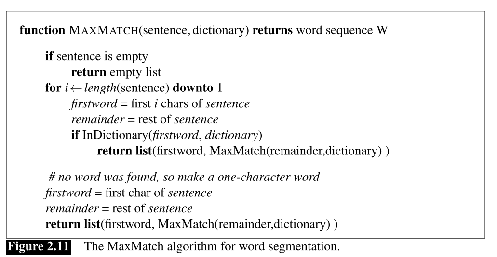
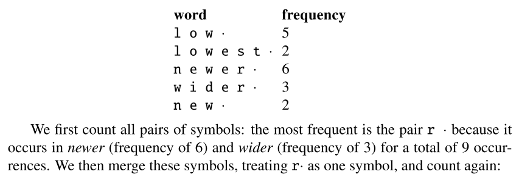
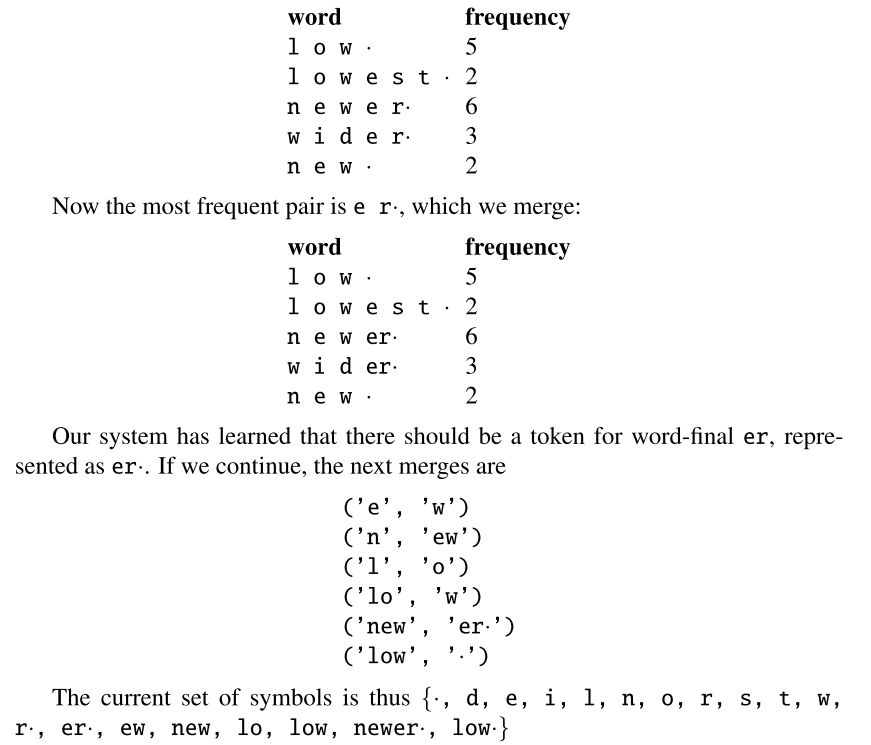
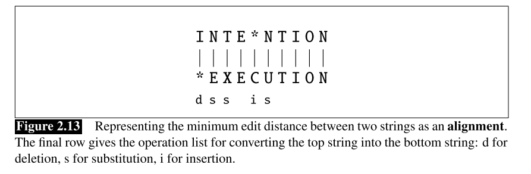
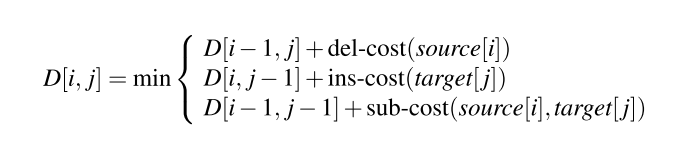
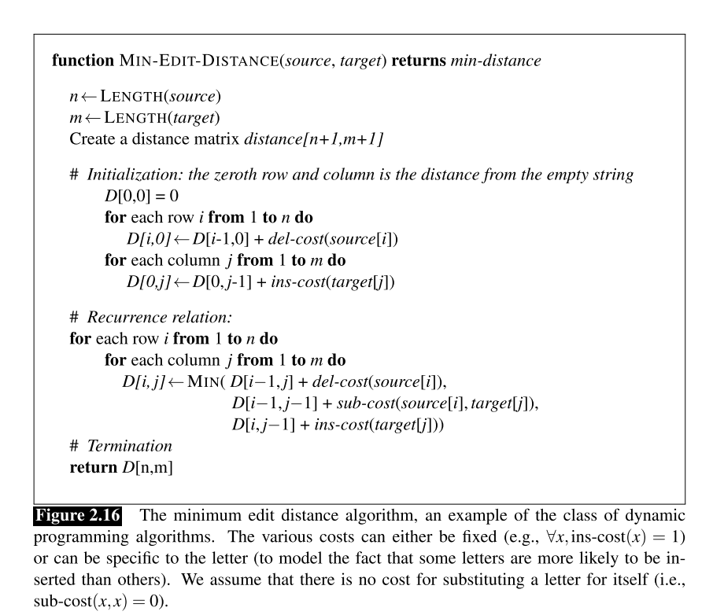

User: You are like my father in some ways.
ELIZA: WHAT RESEMBLANCE DO YOU SEE
User: You are not very aggressive but I think you don’t want me to notice that.
ELIZA: WHAT MAKES YOU THINK I AM NOT VERY AGGRESSIVE
User: You don’t argue with me.
ELIZA: WHY DO YOU THINK I DON’T ARGUE WITH YOU
User: You are afraid of me.
ELIZA: DOES IT PLEASE YOU TO BELIEVE I AM AFRAID OF YOU
Weizenbaum (1966)
2.1 Regular Expressions
2.1.1 Basic Regular Expression Patterns
/woodchuck/ match any string containing substring wordchuck
RE are case sensitive
- square braces [ ] specifies a disjunction of characters to match.
- /[wW]oodchuck/ matches woodchuck or Woodchuck
- /[abc]/ matches a or b or c
- square braces [ ] with the dash (-) to specify any one character in a range
- /[A-Z]/ an upper case letter
- /[a-z]/ a lower case letter
- /[0-9]/ matches a single digit
- square braces [ ] with the caretˆ placed the first symbol after [ to negate
- /[ˆA-Z]/ not an upper case letter
- /[ˆSs]/ neither ‘S’ nor ‘s’
- /[eˆ]/ either ‘e’ or ‘ˆ’
- use the question mark /?/ which means “the preceding character or nothing”
- /woodchucks?/ woodchuck or woodchucks
- /colou?r/ color or colour
- /*/ means “zero or more occurrences of the immediately previous character or regular expression”
- /a*/ zero or more “a” or anything else
- /[ab]*/ aaaa or abab or anything else
/+/ means “one or more occurrences of the immediately previous character or regular expression”
- /a+/ a or aaaa
- /[ab]+/ b or ababab
/./ a wildcard expression that matches any single character (except a carriage return)
- /beg.n/ begin or begun or beg’n
/^/ and /$/ matches the begin and end of a line
- /ˆThe dog.$/ a line that contains only the phrase The dog.
- /\b/ matches a word boundary, and /\B/ matches a non-boundary, word is defined as any sequence of digits, letters and underscores.
- /\b99\b/ match “are 99 dollars” and “$99 “, not match “299”
2.1.2 Disjunction, Grouping, and Precedence
- the disjunction operator |
- pattern /cat|dog/ matches either the string cat or the string dog
- the parenthesis operators ( and )
- Enclosing a pattern in parentheses makes it act like a single character for the purposes of neighboring operators
- /gupp(y|ies)/ guppy or guppies
- operator precedence hierarchy(from highest to lowest)
- Parenthesis ()
- Counters * + ? {}
- Sequences and anchors the ˆmy end$
- Disjunction |
2.4 Text Normalization
2.4.1 Unix tools for crude tokenization and normalization
tr -sc ‘A-Za-z’ ‘\n’ < text.txt | sort | uniq -c
- tr -c: complements to non-alphabet
- tr -s: squeezes all sequences into a single character
- uniq -c: collapse and count them
- a naive word tokenization
tr -sc ’A-Za-z’ ’\n’ < sh.txt | tr A-Z a-z | sort | uniq -c
- collapse all the upper case to lower case
- tr -sc ’A-Za-z’ ’\n’ < sh.txt | tr A-Z a-z | sort | uniq -c | sort -n -r
- sort -n: sort numerically
- sort -r: sort reversely
- find the frequent words
2.4.2 The MaxMatch Algorithms
- chooses the longest word in the dictionary that matches the input at the current position, then iteratively applied again starting from the new pointer position

2.4.3 Collapsing words: Lemmatization and Stemming
morphological parsing : find the smaller meaning-bearing units called morphemes in a word
- stems—the central morpheme of the word, supplying the main meaning
- affixes—adding “additional” meanings of various kinds
The Porter Stemmer : based on series of rewrite rules run in series, e.g.
- ATIONAL → ATE (e.g., relational → relate)
- ING → (delete) if stem contains vowel (e.g., motoring → motor)
- SSES → SS (e.g., grasses → grass)
2.4.4 Byte-Pair Encoding
an algorithm to tokenize words which can help deal with the problem of unknown words
- First begins with the set of symbols equal to the set of characters, then iteratively merge the most frequent pair of characters, replace it with new merged symbol. Count and merge until we’ve done k merges.The resulting symbol set will consist of the original set of characters plus k new symbols.


2.5 Minimum Edit Distance
- minimum edit distance between two strings is defined as the minimum number of editing operations (operations like insertion, deletion, substitution) needed to transform one string into another.

2.5.1 The Minimum Edit Distance Algorithm
- use dynamic programming, define D(i, j) as the edit distance between X[1..i] and Y[1.. j]

